Data-Driven Analysis of Shots during the 2022/23 NHL Season
Created by: Kolby Klassen
Viewing this presentation:
You will see navigation options in the bottom right corner
Navigate using up, down, left, and right keyboard arrows, based on dark purple arrows.Research Objective
Utilizing shot data from the latest NHL season, my objective is to derive actionable insights that can steer strategic decisions, ultimately amplifying a team's goal-scoring performance.
To accomplish this, we'll address 5 key research questions:
Research Questions
Research Question 1: In the context of the NHL, what is considered a high scoring percentage?
Research Question 2: What is the most common shot type?
Research Question 3: When do players typically score during their shifts?
Research Question 4: Do players score more in a specific period - the first, second, or third?
Research Question 5: Where on the rink are most shots made from?
Audience
This statistical analysis is tailored for the strategic minds behind NHL teams - namely, head coaches, assistant coaches, and key members of the coaching staff.
Potential Applications
i. Making the Most of Shifts:
My research indicates that the beginning of a player's shift is a critical window for scoring goals. This insight could aid in player deployment and rotation strategies.
ii. Train Smarter and Manage Better:
My analysis shows that the final period is where scoring odds are highest. I've also identified the shot types that are most likely to find the net. By applying these insights, coaches can enrich training practices and refine game strategies.
iii. Goal-Heavy Zones on the Rink:
One key question I address in my research is where on the rink most goals are scored, and conversely, where most shots are unsuccessful. This spatial analysis can be crucial for the creation of succesful offensive strategies.
Research Question 1: In the context of the NHL, what is considered a high scoring percentage?
- Identify what constitutes a high scoring percentage in relation to the entire league, providing a benchmark for individual performance.
- Explore the distribution of scoring probabilities and understand differences based on player position.
\[\begin{aligned} (Scoring Percent) = Total Shots / Total Goals \end{aligned} \]
Visualizing Distribution with a Histogram
After cleaning the data, an inital step I took was to plot the scoring percentage using a histogram.
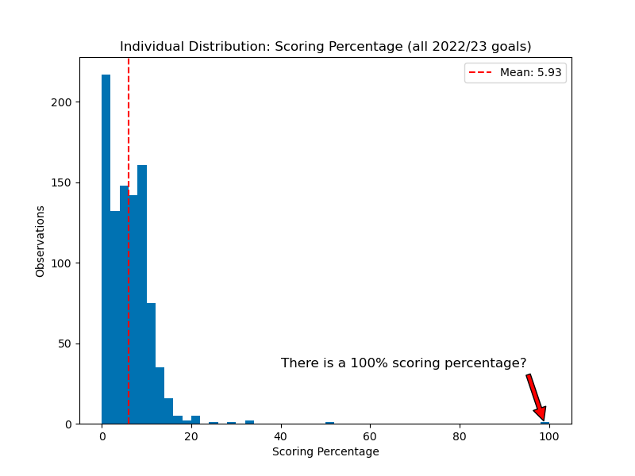A histogram highlights the shape of the distribution, provides context for interpreting statistics such as the mean, and also highlights outlier data points (i.e. the red arrow).
In this case, the right skewness indicates that there may be more players with lower shot scoring percentages and a few exceptional performers with high percentages.
A Discussion about Outliers
Before attempting to draw new conclusions from the data, it is crucial to understand the data in it's context.
For example, the histogram above shows someone with a 100% scoring percentage, while the average is 5.93% across the entire league! This abnormal data point skews the distribution significantly. How should this be dealt with?
To answer this question, it is crucial to dig deeper and learn why the data point exists in the first place!
I was curious to know who has a 100% scoring percentage, but its better to watch than to read - Take a look below:
The above video of Linus Ullmark, a goalie, explains the 100% scoring percentage previously observed in the histogram - it is rare for a goalie to get a shot on net, let alone a goal!
In fact, I was curious so I did some extra digging:
- Only 9 goalies - including Ullmark - have scored a goal during a NHL season.
Returning to the initial question now...
I chose to remove the outliers above 25%, and also exclude any 0% scoring percentage to focus my analysis on the bulk of the data distribution.
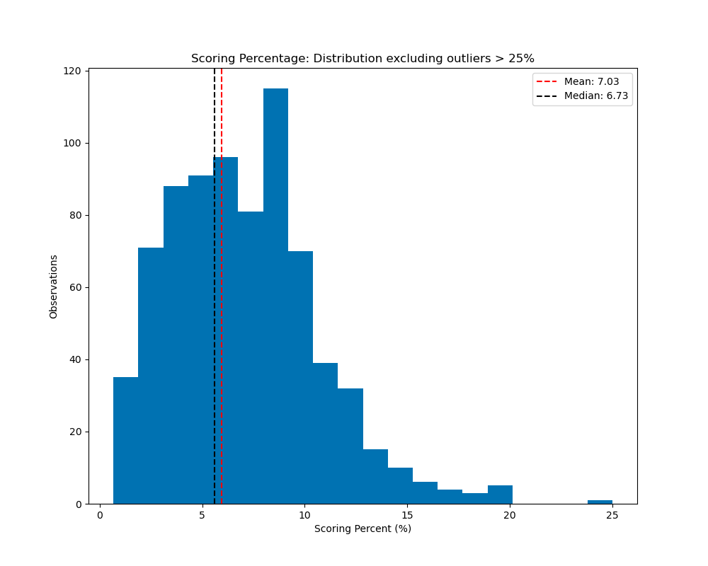The rise in mean after removing outliers suggests that the inclusion of players with 0% scoring percentage, possibly due to injury or limited playing time, skewed the distribution and lowered the overall average.
While the leftward position of the median highlights the influence of high-scoring outliers on pulling the mean towards the right in a right-skewed distribution.
Comparison by position
Forwards against defence - on average, which group has a higher scoring percentage?
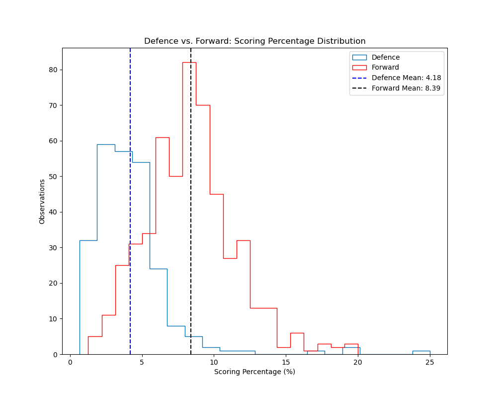Forwards have a higher scoring percentage collectively, on average in comparison to defence, with a difference of 4.21% or 2.01x!
A summary of new insights from Q.1
- In the 2022/23 NHL season, the average scoring percentage for all players was 5.93%,
- The average scoring percentage for forwards was 8.39%,
- While the average scoring percentage for defence was 4.18%.
Research Question 2: What is the most common shot type?
- Do forwards and defence shoot using different types of shots?
- Do some types of shots have a higher scoring probability?
- Do more goals occur than expected from any given shot type based on position?
Wrist shots are significantly the most common shot type across both positions.
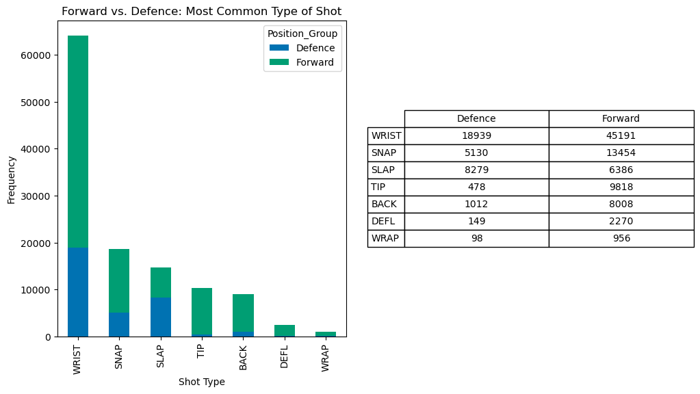- *Backhand shot (BACK)
- *Deflection shot (DEFL)
- *Wraparound shot (WRAP)
But, what percent of outcomes are succesful - i.e. result in a goal - for each shot type?
Comparison of Shot Outcomes
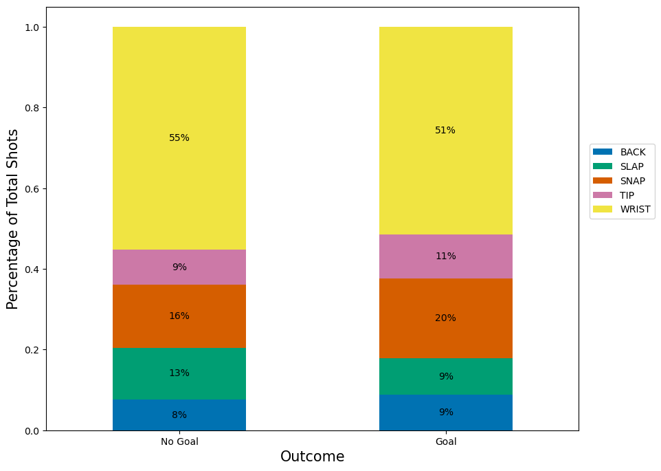Wrist Shot
No Goal: 55%
Goal: 51%
Insight: Wrist shots have a moderate success rate, with slightly more shots failing to result in a goal. They still account for a significant portion of goals scored.
Tip-In Shot
No Goal: 9%
Goal: 11%
Insight: Tip-in shots have a relatively lower success rate compared to other shot types, indicating the need for precision and timing to convert them into goals.
Snap Shot
No Goal: 16%
Goal: 20%
Insight: Snap shots have a higher success rate compared to tip-ins, suggesting that they are more effective in scoring goals.
Slap Shot
No Goal: 13%
Goal: 9%
Insight: Slap shots have a slightly higher percentage of unsuccessful attempts compared to successful ones, indicating the need for accuracy and power.
Backhand Shot
No Goal: 8%
Goal: 9%
Insight: Backhand shots have a relatively balanced success rate and may require finesse and precise execution to score goals.
As a coach, these insights can yield improved decision making. To further establish a statistical basis for strategic development, I will now be conducting a chi-square test.
This statistical test helps determine whether the observed distribution of goals across shot types is significantly different from what would be expected by chance.
By plotting the results on a contingency plot, you can easily identify shots with a statistically higher chance of going in than expected. These shots will have higher numbers and appear greener in color.
Forwards vs. Defence - Statistical Insights on Goal Scoring
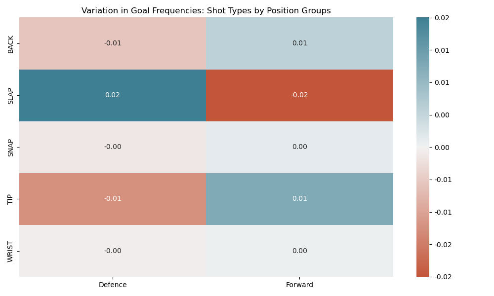 Numbers denote the shot type's goal scoring ratio exceeding statistical expectations, calculated using a Chi-square contingency test.The heatmap serves as a visual tool for presenting insights derived from the Chi-square analysis, which can reveal intriguing patterns. Analyzing the heatmap allows you to gain insights into the relationship between shot types, positions, and goal frequencies.
For example, the positive difference of 0.02 for slapshots suggest that defense players have a statistical advantage in scoring goals with that particular shot type; this could be due to a number of factors, one being if they practice more using a slapshot.
This information helps identify positional strengths and weaknesses, enabling informed decisions and strategies based on observed statistical advantages or disadvantages.
Research Question 3: When do players typically score during their shifts?
- What is the average duration of a player's shift?
- Is there a specific time within a player's shift when goals are commonly scored?
To gain a better understanding of shift length, it is valuable to determine the average duration of a shift.
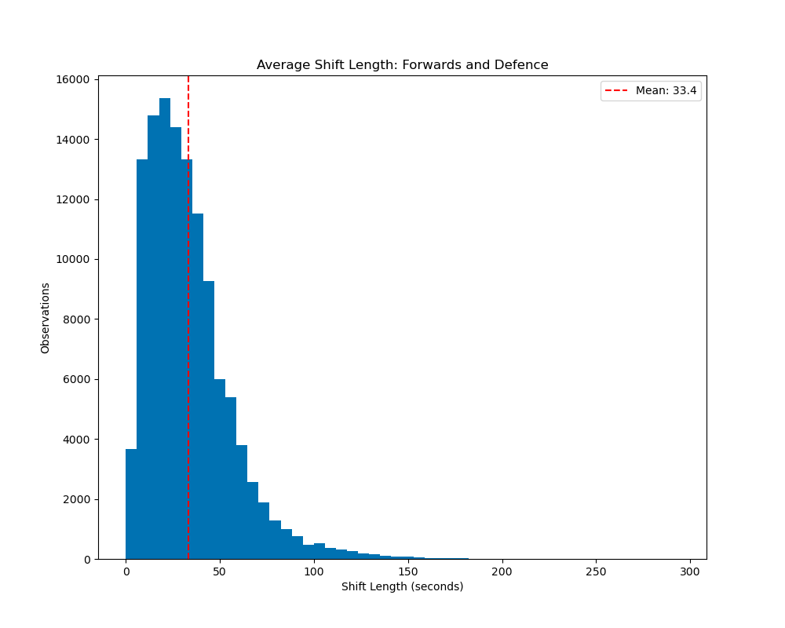The previous chart demonstrates a noticeable decrease in the frequency of shifts that surpass the 50-120 second range. This observation aligns with the general understanding among hockey enthusiasts that shifts lasting over 2 minutes are infrequent.
As we move forward, I will exclude shifts with durations exceeding 120 seconds in the upcoming plots. This filtering allows us to concentrate on the central part of the data distribution and gain a more focused understanding of the majority of shifts.
Excluding shifts where the length exceeded 2 minutes, the average shift length when a goal is scored is 35.3 seconds.
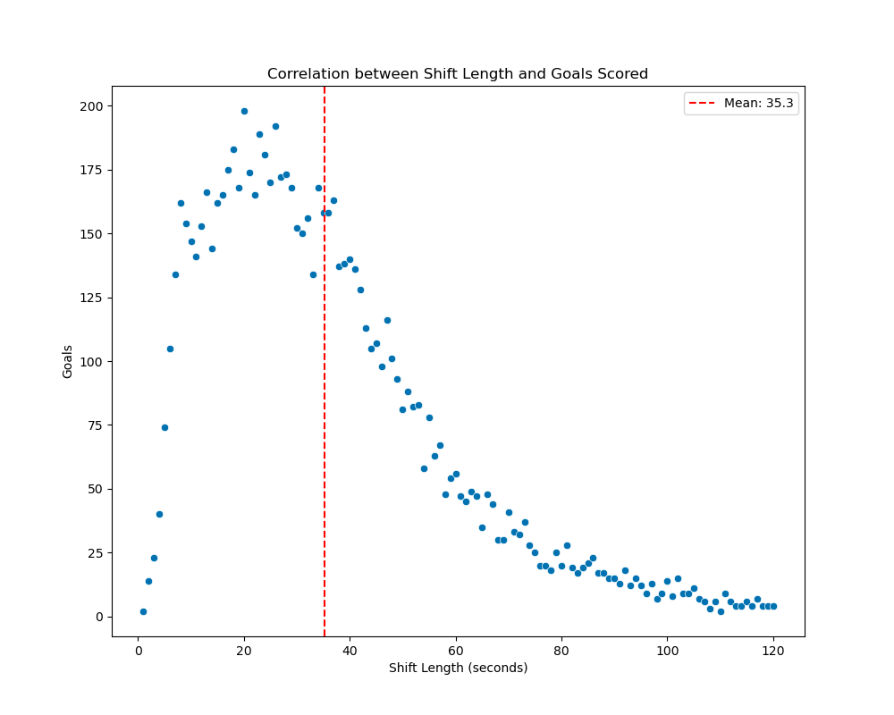This scatterplot demonstrates a clear trend during the first 35 seconds of a shift, indicating a positive relationship between time on ice and the probability of scoring. As the time on ice increases, the likelihood of scoring also increases.
However, after reaching a peak around the mean, the trend shifts abruptly, showing a negative correlation. In this portion of a shift, more time on ice tends to result in fewer goals.
Research Question 3. Summary
Goals tend to be scored within the first 35.3 seconds of shifts that last less than 2 minutes, underlining the need for quick offensive actions.
One takeaway based on these findings is a need for coaches to prioritize conditioning and stamina training to optimize player performance within these shorter timeframes.
Research Question 4: Do players score more in a specific period - the first, second, or third?
- Absolute comparison
- Relative comparison
In pursuit of answering Research Question 4, I'll continue to build upon our understanding of game dynamics, examining how scoring likelihood associates with different periods in the game.
For instance, do we observe a higher incidence of goals scored at the onset of the game when players presumably possess the most energy? Alternatively, do we see an increase in scoring as the game unfolds, potentially suggesting one team's superior endurance and conditioning?
To begin, let's take a look at the average total shots and total goals per period.
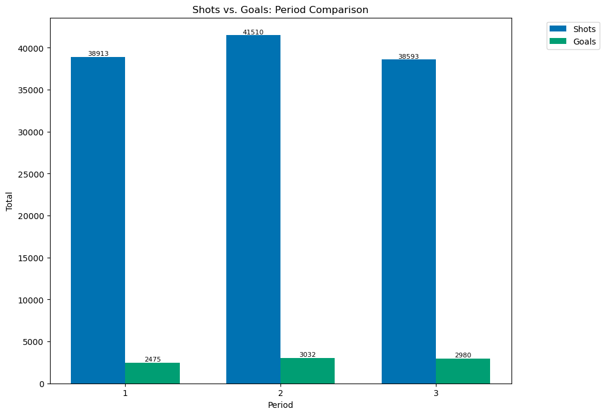While the second period leads in terms of both shots taken and goals scored, these results are derived from absolute counts, as depicted on the bar chart.
By shifting our analysis to a relative perspective, such as plotting the ratio of goals to total shots for each period, we may further explore whether the scoring probability remains highest during the second period.
Switching to a relative comparison reveals a different trend.
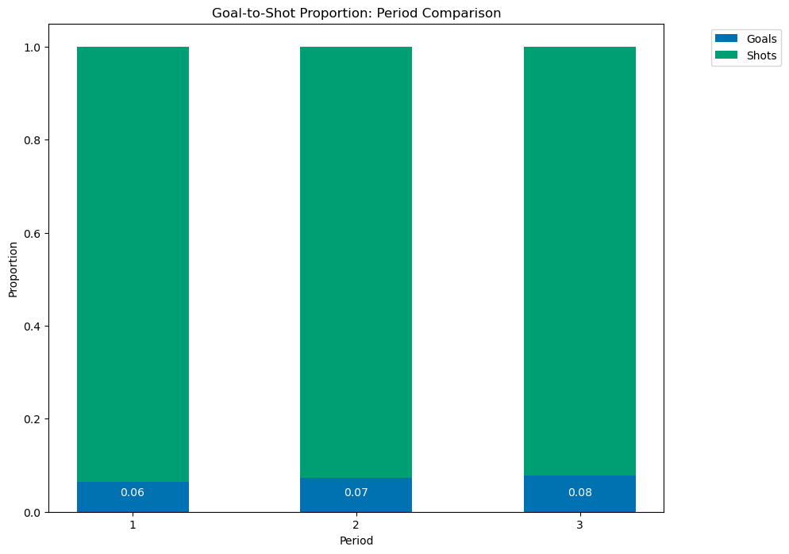As the game progresses, the scoring percentage, on average, rises by 1% per period. This implies that the final period witnesses the most goals scored relative to shots taken!
The analysis of game dynamics in hockey shows that, despite the second period leading in terms of absolute shots taken and goals scored, a relative comparison reveals that the scoring percentage progressively rises by 1% per period.
This indicates that the most efficient scoring, relative to shots taken, occurs in the final period, a critical finding for coaches in managing player deployment and strategizing scoring opportunities.
In addressing Research Question 4, we've revealed critical insights into scoring dynamics over the course of a hockey game.
By distinguishing between absolute and relative scoring patterns, we discovered that while the second period often sees the most shots taken and goals scored in raw counts, the scoring efficiency—goals scored relative to shots taken—actually improves with each advancing period.
This nuanced understanding is invaluable for coaches and teams, empowering them to strategically manage player deployment, optimize scoring opportunities, and adjust game plans as the match unfolds. Ultimately, this analysis highlights the significant role of strategic timing in enhancing team performance and goal-scoring efficiency in hockey.
Research Question 5: Where on the rink are most shots made from?
- Do shots resulting in goals originate from different locations on average?
Identifying patterns in successful versus unsuccessful shots can yield insights into optimal offensive plays.
In the final research question, I'll aim to pinpoint the most common locations on the ice for shots, further refining our understanding of effective goal-scoring strategies.
The dimensions of the density heatmap mirror those of an official NHL hockey rink—200 feet in length and 85 feet in width.
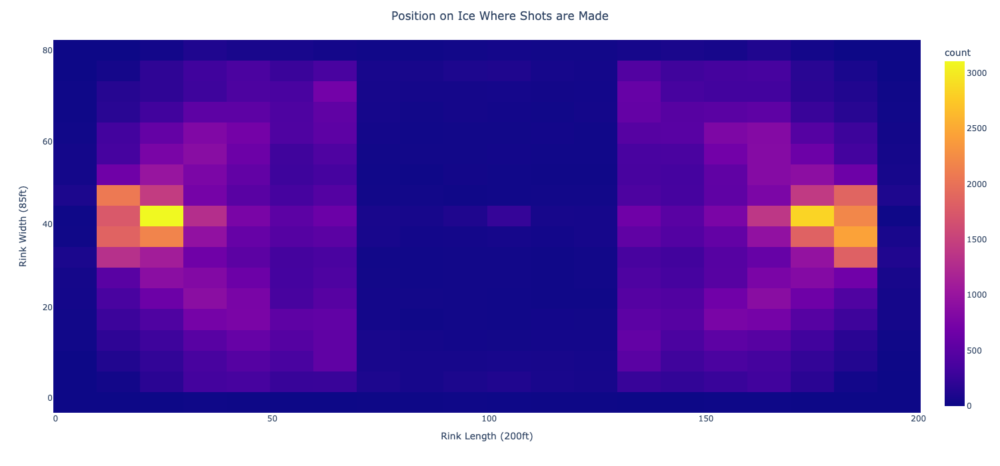Regions with brighter hues correspond to higher scoring probabilities.
The heatmap, which plots shot frequency based on x and y rink coordinates, reveals an immediate pattern: most shots take place near the goalie net. Even without explicitly marking the net's location, its probable position is clear.
As we move forward, adding these key landmarks will refine our analysis and understanding. Furthermore, we'll break down shot locations by outcome—goal or no goal—to discern any positional advantages.
Yellow line: Goalies Net | Blue Line: Blue Line | Red Line: Center Ice
By incorporating landmarks such as the goalie net and grouping the shots based on their outcome (goal or no goal), we can uncover valuable insights. One notable finding is that shots that result in a goal tend to be closer in physical distance to the goalie, on average.
These findings suggests that proximity to the goalie plays a crucial role in determining the success of a shot.
Summarizing Research Question 5, our findings underscore the role of location in developing coaching strategies for optimizing goal scoring.
Coaches can use this analysis to decide where on the rink to position their players.
For example, forwards' higher scoring percentage and the type of shots they typically make, such as TIP shots that have a higher-than-expected probability of resulting in a goal, suggest certain strategies. Practicing TIP shots near the goal, given the heatmap evidence of their effectiveness, could be a potential strategy to improve scoring outcomes.
Future Research
This concludes my data analysis capstone project! Before I depart, I would like to share final words on areas of future research that I believe could extend from this analysis.
I would be very curious to apply these research questions on a more specific scenario, such as by focusing on a specific NHL team as opposed to analyzing the entire league. This could offer new interesting insights, that would offer more direct application. For instance, learning the expected scoring percentages based on the type of shot made offered interesting insight in this analysis, but it was league wide; if I drill down and compare the analysis with specific teams, to analyze their players expected scoring probabilities with different shot types, I could potentially discover patterns to exploit. If the team has a even greater deviation from the expected scoring probability than the leagues average, this insight would hint at the teams players being more skilled with those shot types; whether this be measured by accuracy, speed, etc.
I can envision the benefits of obtaining more detailed analysis on a team - and player by player - basis to craft more optimal offensive and defensive strategisies, leading to more goals for and less goals against, resulting in a better overall team.
About the Data
- The dataset used contains all shots during the 2022/23 NHL regular season
- The total shot count is roughly 121,000 shots
- Each shot contains roughly 137 various features associated with it (e.g. shooter name, shot type, x/y cordinates)
- The data is sourced from: moneypuck.com
Created by: Kolby Klassen
View the full analysis on Github